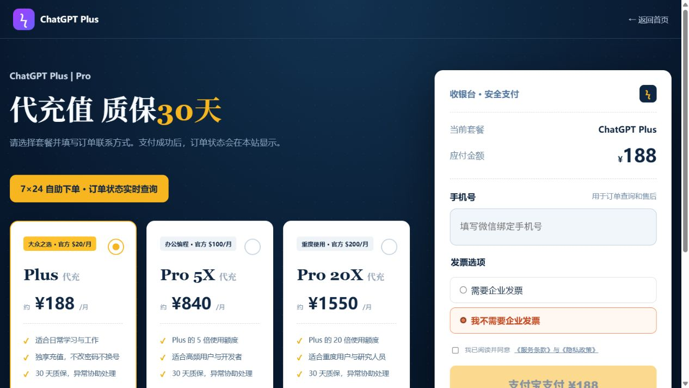

ChatGPT Plus Codex 支付宝订阅教程：GPT-6 Astra、GPT-6 Sol、GPT-6 Luna 使用指南
此页内容
ChatGPT Plus 订阅、Codex 额外使用额度、OpenAI API Token 属于不同产品或计费项目。模型权限以当前账号显示为准。
随着 GPT-6 系列上线，越来越多用户开始搜索 ChatGPT Plus 怎么订阅、Codex 怎么付费、ChatGPT Plus 能不能使用支付宝，以及 GPT-6 Astra、GPT-6 Sol、GPT-6 Luna 有什么区别。对于国内用户来说，真正容易遇到的问题往往不是怎么使用 ChatGPT，而是 ChatGPT Plus 支付方式、银行卡支付失败、Codex 额度以及不同 GPT-6 模型应该怎么选择。
本文集中介绍 ChatGPT Plus、Codex、GPT-6 Astra、GPT-6 Sol、GPT-6 Luna，以及大家比较关心的 ChatGPT Plus 支付宝订阅问题。
查看 WokeeSub 订阅方案
了解当前套餐、支付方式与订单说明。

一、ChatGPT Plus 是什么？
ChatGPT Plus 是 OpenAI 面向个人用户提供的付费订阅方案，目前官方基础价格为每月 20 美元。
相比免费版，ChatGPT Plus 可以获得更高的模型和功能使用额度，同时支持文件分析、图片生成、Deep Research 等更多功能。具体可使用的模型和额度可能随着 OpenAI 更新发生变化。
需要特别注意的是：
ChatGPT Plus 和 OpenAI API 并不是同一个产品。
购买 ChatGPT Plus 并不等于获得等额的 OpenAI API Token，API 使用量需要单独计费。
二、ChatGPT Plus 可以使用 Codex 吗？
可以。
目前 Codex 已经与 ChatGPT 的个人付费方案深度整合。对于需要写代码、修改项目、分析程序或者让 AI 完成长流程开发任务的用户，Codex 是非常重要的功能。
即使不是专业程序员，也可以通过自然语言告诉 Codex：
“帮我修改这个网站。”
“检查这段代码为什么报错。”
“帮我增加一个后台功能。”
“分析整个项目并找到问题。”
因此现在搜索 ChatGPT Plus Codex、Codex 订阅、Codex 充值和 Codex 额度的用户越来越多。
三、GPT-6 Astra 是什么？
GPT-6 Astra 是 GPT-6 系列中的高能力模型，主要面向复杂任务、专业工作、软件工程、科学研究以及需要更强推理能力的场景。
如果你的任务属于复杂项目，例如大型程序分析、多步骤专业工作、复杂代码调试等，可以关注 GPT-6 Astra。
不过不同 ChatGPT 套餐、Codex、ChatGPT Work 和 API 的模型开放情况并不完全相同，因此应以自己账号实际显示的模型列表为准。
四、GPT-6 Sol 是什么？
GPT-6 Sol 更强调能力、速度和成本之间的平衡。
对于 Codex 用户来说，GPT-6 Sol 比较适合复杂编码、Agent 工作流、项目修改以及需要连续处理多个步骤的任务。
如果日常既需要较强能力，又不希望所有任务都使用最高成本模型，GPT-6 Sol 是值得关注的 GPT-6 模型之一。
五、GPT-6 Luna 是什么？
GPT-6 Luna 更强调速度和使用成本。
它比较适合大量、相对明确的日常任务，例如代码辅助、文本处理、简单分析以及高频工作。
因此可以简单理解为：
- GPT-6 Astra：偏向高难度专业任务。
- GPT-6 Sol：偏向综合能力和复杂工作。
- GPT-6 Luna：偏向快速、高频和成本效率。
实际选择时不需要始终追求能力最高的模型，根据任务复杂程度选择更加合适。
六、ChatGPT Plus 支持支付宝吗？
这是国内用户搜索最多的问题之一。
目前 ChatGPT 网页端并没有面向中国大陆普遍提供“支付宝”作为官方直接付款方式。
ChatGPT 网页端常见的官方支付方式仍然是支持的信用卡或借记卡，不同国家和地区还可能存在本地支付方式。
如果通过 iPhone 或 Android 应用内订阅，则付款由 Apple App Store 或 Google Play 负责，因此实际能够使用什么付款方式，还取决于对应的 Apple ID、Google Play 账号、地区以及应用商店支持的付款方式。
所以搜索“ChatGPT Plus 支付宝订阅教程”时，需要先区分：
- ChatGPT 官网直接订阅；
- Apple App Store 应用内订阅；
- Google Play 应用内订阅；
- 第三方代充或代订阅。
它们并不是同一种付款渠道。
WokeeSub 页面示例
下面是 wokeesub.com 的套餐与收银台实际界面。截图仅用于展示页面位置，价格、可售套餐和服务条款以进入网站后的实时页面为准。


查看 WokeeSub 订阅方案
了解当前套餐、支付方式与订单说明。
七、ChatGPT Plus 支付失败怎么办？
如果购买 ChatGPT Plus 时出现银行卡被拒绝、支付失败、无法完成付款等情况，可以优先检查：
- 银行卡是否支持国际在线支付；
- 账单信息是否正确；
- 账户地区和付款方式是否匹配；
- 银行是否拦截境外交易；
- 当前 ChatGPT 账号是否存在异常的重复支付请求。
不要在付款失败以后短时间连续提交大量支付请求。
如果通过 App Store 或 Google Play 购买，则应该同时检查对应应用商店的付款状态。
八、Codex 是否需要单独订阅？
是否需要额外购买，取决于你的 ChatGPT 套餐以及使用量。
ChatGPT Plus 等套餐可以包含一定的 Codex 使用能力。当套餐包含的使用量达到限制以后，符合条件的账户还可能看到购买额外 Credits 的入口。
因此，“Codex 充值”和“ChatGPT Plus 订阅”不能完全画等号。
一个是 ChatGPT 套餐，另一个可能涉及套餐之外的额外使用额度。
使用 Codex 比较频繁的人，可以在 ChatGPT 的使用情况页面或者 Codex 的 Usage & Billing 中查看实际额度。
九、ChatGPT Plus、Codex 和 GPT-6 应该怎么选择？
如果主要使用 ChatGPT 进行日常问答、写作、文件分析、图片处理以及偶尔使用 Codex，可以先考虑 ChatGPT Plus。
如果大量使用 Codex 完成开发、网站修改、程序分析和 Agent 工作流，则应该进一步关注 Codex 使用额度以及额外 Credits。
模型方面，则可以根据任务复杂程度在 GPT-6 Astra、GPT-6 Sol、GPT-6 Luna 等模型之间选择。
并不是所有任务都需要使用能力最强的模型。
十、ChatGPT Plus 支付宝订阅常见问题
很多用户会搜索：
- ChatGPT Plus 支付宝怎么充值？
- ChatGPT Plus 国内怎么付款？
- ChatGPT Plus 支付失败怎么办？
- Codex 怎么充值？
- Codex 支付宝可以充值吗？
- GPT-6 Astra 怎么使用？
- GPT-6 Sol 怎么使用？
- GPT-6 Luna 怎么使用？
- ChatGPT Plus 能不能使用 Codex？
这些问题实际上主要分成三个方向：ChatGPT Plus 套餐、付款渠道以及 Codex/GPT-6 模型使用权限。
在付款之前，建议先确认自己需要的是 ChatGPT Plus 订阅、Codex 额外使用额度，还是 OpenAI API Token，避免购买错误的产品。
总结
目前 ChatGPT Plus、Codex 和 GPT-6 系列已经形成了不同的使用场景。ChatGPT Plus 更适合个人综合使用；Codex 更侧重代码和 Agent 工作；GPT-6 Astra、GPT-6 Sol、GPT-6 Luna 则针对不同复杂度和成本需求提供选择。
对于国内用户关心的 ChatGPT Plus 支付宝订阅问题，目前应先确认自己使用的是官网、App Store 还是 Google Play 渠道。不同渠道支持的付款方式不同，并不存在一个适用于所有账户的“支付宝百分百成功”方法。
如果遇到 ChatGPT Plus 支付失败、Codex 额度不足、GPT-6 模型找不到等情况，应以当前账户实际显示的套餐、地区、付款方式和模型权限为准。
查看 WokeeSub 订阅方案
了解当前套餐、支付方式与订单说明。